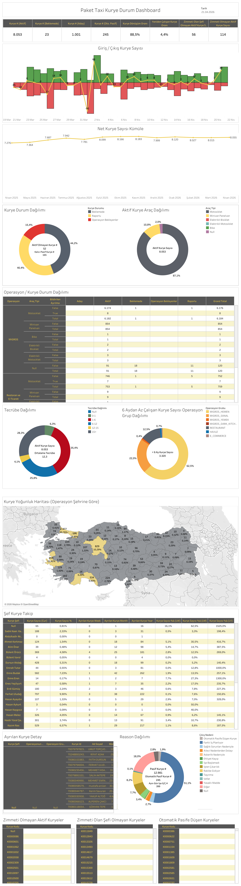

Canlı Rapora Erişin
Güncel kurye durum verilerini Tableau üzerinde interaktif olarak görüntüleyin.
Dashboard Hakkında
Ne Gösterir?
PT - Kurye Durum Dashboard, Paket Taxi kurye havuzunun anlık ve dönemsel durumunu kapsamlı biçimde analiz eder. Kurye giriş/çıkış hareketleri, durum dağılımı, tecrübe analizi ve coğrafi yoğunluk haritası içerir.
- Özet Metrikler: Aktif kurye sayısı, beklemede, aktif Kurye#B, katılı pasif Kurye#B, kurye dönüşüm oranı, zimmetli olmayan ve çefisiz aktif kurye sayıları
- Giriş/Çıkış Trendi: Günlük bazda kurye giriş ve çıkış sayılarını gösteren bar grafik
- Net Kurye Sayısı Kümele: Nisan 2025'ten günümüze aylık birikimli net kurye sayısı trendi
- Kurye Durum Dağılımı: Aktif, beklemede ve katılı pasif kuryelerin pasta grafik dağılımı
- Aktif Kurye Araç Dağılımı: Motosiklet, minivan, elektrikli motosiklet ve bisiklet araç tiplerinin dağılımı
- Operasyon/Kurye Durum Dağılımı: Operasyon ve araç tipine göre aktif, aday ve diğer durumların detaylı tablosu
- Tecrübe Dağılımı: Ortalama tecrübe ve tecrübe gruplarının pasta grafik analizi
- Kurye Yoğunluk Haritası: Türkiye haritası üzerinde operasyon şehrine göre kurye yoğunluğu
- Şef Kurye Takip: Şef bazlı kurye sayısı, dönüşüm oranı, ayrılan kurye ve aktif kurye metrikleri
- Ayrılan Kurye Detay & Reason Dağılımı: Ayrılma nedenleri pasta grafiği ile detaylı kurye listesi
Dashboard Önizleme

PT - Kurye Durum Dashboard — Tableau